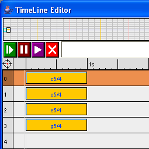

The TimeLine editor allows to edit and manipulate musical objects. As with usual editors, musical object are placed in sequence on different tracks and the tracks are themselves mixed. Tracks can contain either basic musical object or functions.
Selection and cursor manipulation commands are intuitive and similar to those of most text editor.
Musical expressions coming from other parts of the user interface can be dragged into the editor:
Different operations can directly be done on individual objects: transposition, attenuation, stretch, quick duplicate and change of MIDI channel. By clicking on the sides of an object, the cursor shape changes and then moving the mouse allows to change the value of the parameters.
Objects can be copied by Alt-clicking and moving them in a different location. Tracks can be copied by Alt-clicking on the beginning of a track and then moving to destination.
Objects can also be copied, cut, and pasted by pressing respectively Ctrl+C, Ctrl+X, and Ctrl+V.
Most of yours operations can be undone by pressing Ctrl+Z.
The following pop-up menu can be obtained by right-clicking on an object. It allows to execute various commands:
The following pop-up menu can be obtained by right-clicking on the beginning of a track. It allows to execute various commands:
The following pop-up menu can be obtained by right-clicking on the upper left target. It displays the global commands that also are accessible with the upper buttons:
The following pop-up menu can be obtained by right-clicking on the time line. On the one hand, it allows to locate the cursor (shortcut: Ctrl+Click on the time line). On the other hand, it allows to change the global zoom factor (shortcut: Ctrl+Plus, Ctrl+Minus or Ctrl+Mouse wheel). Note that the zoom factor can also be changed by dragging the mouse vertically on the time line. It is possible to horizontally scroll the editor content by dragging the mouse horizontally on the time line.
The single argument functions can be applied directly on any musical object in the editor. By dragging the function on top of the target object, an APPLY feedback will appear indicating that the function can be applied on the object. By releasing the mouse, the function will be applied and the result will appear instead of the initial object. In the following example, a repeat4 function (wich repeat its argument 4 times) is applied on the extrait1 object.
Functions have a duration and can be placed in tracks like regular musical objects. Sequences of functions will be applied with the following semantic: each function is applied on the portion of the object argument corresponding to the function duration. In the following example, two functions are used: a transpose-12 function and a transpose+12 function, applied on a sequence of C notes. The result can be seen in the top graphic display. Note that the track containing function is in function mode: in this case rest in the function track are interpreted as identity function during evaluation.
They are four rules of evaluation depending of the track content:
Group of normal tracks are mixed together.
An abstraction track contains an object which will be abstracted in the object resulting from the evaluation of the bottom tracks. In the following example, a c5/4 note is abstracted in a chord (actually a MIX) of c5/4, c5/4 +4 (transposition by 4) and c5/4 +7 (transposition by 7). The result is an abstraction which in this particular case represent an abstract chord, actually a major chord.

A track in seq function mode will be applied on the track just bellow. When several consecutives functions are applied on a argument track, the results of the application of each function will be put in sequence. If several tracks in functions mode are used, this process will be repeated several times. Here is an example of "multi-layer" applications:

A track in mix function mode will be applied on the track just bellow.When several consecutives functions are applied on a argument track, the results of the application of each function will be mixed (this behavior is particulary adapted when applying functions on the real-time input). If several tracks in functions mode are used, this process will be repeated several times. Here is an example of "multi-layer" applications:

Remarks: